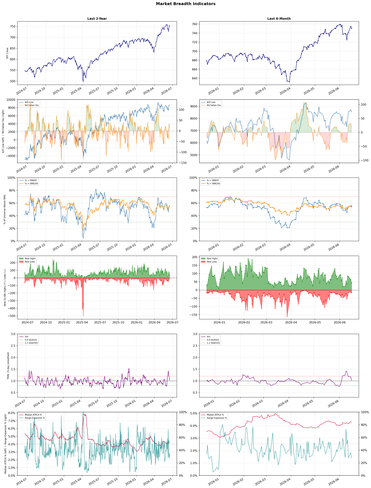

A daily market breadth and sector rotation report for active investors
| Item | Read |
|---|---|
| Regime | Selective Risk-On |
| Risk posture | Selective |
| Universe | 1,344 stocks tracked · 44 new 52-week highs · 30 active swing setups |
| Breadth | 54.0% of tracked stocks are above SMA50 — neutral range, new highs exceed new lows (44 vs 16) |
| Leadership | Computer Hardware, Semiconductor Equipment & Materials, and Healthcare Plans |
| Weakest groups | Agricultural Inputs, Financial Data & Stock Exchanges, and Oil & Gas E&P |
Use this report to prioritize research and chart review; validate entries, stops, liquidity, earnings, and risk before acting.
| Item | Read |
|---|---|
| Primary read | Selective Risk-On regime with Selective risk posture. |
| Research queue | SNDK, DELL, STX, WDC, UMAC |
| Leadership focus | Computer Hardware, Semiconductor Equipment & Materials, and Healthcare Plans |
| Caution list | Agricultural Inputs, Financial Data & Stock Exchanges, and Oil & Gas E&P |
| Review prompt | Check extension risk, chart location, fundamentals, valuation, and earnings before using any research row. |
| Item | Read |
|---|---|
| Primary read | 1 active risk warnings; use screen output as watchlist input only. |
| Bullish screens | STX, WDC, AMKR, LUV, BNS |
| Bearish screens | FOXA, NOG |
| Alerts / levels | Automated trigger, stop, ATR, liquidity, reward/risk, and event-risk levels are pending future enrichment. |
| Review prompt | Open the linked chart, define trigger and invalidation, then check liquidity and event risk independently. |
Risk Posture: Selective — screen backdrop supports selective research in leading industries
Metric context: McClellan below -50 = elevated selling pressure; below -100 = washout territory. Range Expansion = share of stocks with daily range above their 20-day average. Signal Density = share of tracked names appearing in signal screens.
| Breadth Date | % > SMA50 | % > SMA200 | New Highs | New Lows | McClellan | Median Range | Avg Range | Median ATR14 | Range Expansion | Signal Density |
|---|---|---|---|---|---|---|---|---|---|---|
| 2026-06-16 | 54.0% | 55.6% | 44 | 16 | 17.9 | 3.1% | 3.9% | 4.3% | 27.5% | 4.3% |

Prior comparison date: June 15, 2026
| Metric | Prior | Current | Change |
|---|---|---|---|
| Regime | Selective Risk-On | Selective Risk-On | unchanged |
| Risk Posture | Selective | Selective | unchanged |
| % > SMA50 | 55.5% | 54.0% | -1.6 pts |
| % > SMA200 | 56.0% | 55.6% | -0.4 pts |
| New Highs | 67 | 44 | -23 |
| New Lows | 15 | 16 | -1 |
Top-10 industries entering: Advertising Agencies and Banks - Diversified. Top-10 industries leaving: Diagnostics & Research and Steel. New multi-signal long setups: ALL, BEN, D, EMR, GE, KVUE, LUV, MFC, MS. New multi-signal short setups: FOXA.
| Status | Tickers | Read |
|---|---|---|
| Added | ALL, BEN, CI, CRSR, D, EMR, FOXA, GE | New technical screen matches vs prior report. |
| Removed | ALGM, AMAT, AMD, C, COHU, DAL, DELL, DRH | No longer present in today's technical screen matches. |
| Still Active | AMKR, BNS, GTX, PENN, STX, TWST, VIRT | Appeared in both current and prior reports. |
| Promoted | none | Model Screen Score improved by at least 15 points. |
| Downgraded | none | Model Screen Score declined by at least 15 points. |
| Direction | Industry | ETF | Prior Rank | Current Rank | Days | Rank Change |
|---|---|---|---|---|---|---|
| Rose | Diagnostics & Research | N/A | 87 | 11 | 42 | +76 |
| Rose | Building Products & Equipment | XHB | 94 | 20 | 28 | +74 |
| Rose | Copper | COPX | 86 | 14 | 42 | +72 |
| Rose | Footwear & Accessories | N/A | 87 | 16 | 35 | +71 |
| Rose | Airlines | N/A | 78 | 7 | 28 | +71 |
Bull: The Diagnostics & Research industry is experiencing a rise in relative strength driven by increased investor interest in healthcare stocks, as highlighted by Morningstar's identification of top healthcare stocks and the sector-wide rally that boosted companies like Waters. Additionally, the growing integration of AI in healthcare, as noted by U.S. News, is likely enhancing innovation and efficiency in diagnostics, further attracting investment and reinforcing the industry's positive momentum.
Bear: While the Diagnostics & Research industry may currently exhibit rising relative strength, this could be misleading given the cyclical nature of healthcare investments and the potential for overvaluation in a sector that has seen significant speculative interest. The recent sell-off of Adaptive Biotechnologies shares indicates that not all companies are benefiting equally from this rally, and concerns about regulatory pressures, reimbursement challenges, and the sustainability of AI integration in diagnostics could dampen long-term growth prospects. Additionally, the market's enthusiasm may be driven more by short-term trends rather than fundamental improvements, suggesting a potential correction ahead.
Verdict: The Diagnostics & Research industry is experiencing a rise in relative strength primarily due to heightened investor interest in healthcare stocks and the promising integration of AI technologies, which are driving innovation and efficiency. However, investors should remain cautious of potential overvaluation and the cyclical nature of healthcare investments, as evidenced by the recent sell-off of Adaptive Biotechnologies, indicating that not all companies may sustain this positive momentum in the long term.
Sources: Google News
Bull: The Building Products & Equipment sector is experiencing rising relative strength primarily due to robust demand in the homebuilding market, as indicated by headlines discussing PulteGroup's stock performance and the ongoing challenges posed by soaring mortgage rates. Additionally, the mention of a growing $1 trillion club suggests increased investment and confidence in the sector, while the focus on construction materials and equipment stocks highlights a potential shift towards infrastructure and housing development amidst economic recovery, positioning the industry favorably compared to others.
Bear: While the bull thesis highlights rising demand in the homebuilding market, it overlooks the significant headwinds posed by soaring mortgage rates, which are likely to dampen buyer affordability and suppress demand for new homes. Additionally, the mention of a growing $1 trillion club could reflect speculative investment rather than genuine economic strength, and the focus on construction materials may not translate into sustainable growth for the sector, especially if economic conditions worsen or if supply chain issues persist.
Verdict: The Building Products & Equipment sector is likely experiencing rising relative strength due to strong demand in the homebuilding market, driven by a combination of ongoing economic recovery and increased investment in infrastructure. However, the key risk remains the impact of soaring mortgage rates, which could significantly dampen buyer affordability and suppress demand for new homes, potentially undermining the sector's growth momentum. Investors should closely monitor mortgage rate trends and housing market dynamics to assess the sustainability of this upward trajectory.
Sources: Yahoo Finance, Google News
Bull: Copper's rising relative strength can be attributed to its critical role in the green energy transition and technological advancements, particularly in AI and alternative energy sectors. As highlighted in the recent headlines, the increasing demand for copper in applications such as electric vehicles and grid resilience—coupled with the strong performance of copper ETFs, which returned 156% in a year—positions copper as a key beneficiary in a market focused on sustainable growth and infrastructure development. Additionally, the positive outlook for commodities amidst themes like AI and alt energy further supports copper's bullish trajectory.
Bear: While copper's role in the green energy transition and technological advancements is often emphasized, the current economic landscape presents significant headwinds that could undermine this bullish narrative. A potential global manufacturing slowdown could lead to decreased demand for copper, particularly if construction and infrastructure projects are scaled back. Furthermore, the rapid price appreciation of copper, as evidenced by the 156% return in the past year, raises concerns about sustainability and the possibility of a correction, especially if speculative interest wanes amid broader economic uncertainties.
Verdict: Copper's rising trend is fundamentally driven by its essential role in the green energy transition and technological advancements, particularly in electric vehicles and renewable energy infrastructure, which are fueling strong demand. However, the key risk lies in the potential for a global manufacturing slowdown, which could dampen demand and trigger a price correction, especially given the rapid appreciation seen in recent months. Investors should monitor economic indicators closely to assess the sustainability of copper's upward trajectory.
Sources: Yahoo Finance, Google News
Bull: The Footwear & Accessories industry is experiencing a rising relative strength due to favorable industry trends that are driving growth, as highlighted in recent headlines. Increased consumer demand for innovative and stylish footwear, alongside a sector-wide rally exemplified by Crocs' 6.7% jump, suggests that companies are capitalizing on changing consumer preferences and market conditions. Additionally, the identification of several stocks well-poised for growth, as noted by Yahoo Finance and TradingView, indicates a positive outlook and investor confidence in the sector's potential for continued expansion.
Bear: While the recent headlines highlight a rally in the Footwear & Accessories industry, it's essential to consider the broader economic context, including potential inflationary pressures and changing consumer spending habits that could dampen discretionary purchases. Additionally, the sector's reliance on trends can lead to volatility; a short-term surge in stocks like Crocs may not reflect sustainable growth if consumer preferences shift or if competition intensifies. Therefore, the optimism surrounding this sector may be overly optimistic, overlooking significant risks that could hinder long-term performance.
Verdict: The Footwear & Accessories industry's recent rise is fundamentally driven by strong consumer demand for innovative and stylish products, as evidenced by notable stock rallies like Crocs' 6.7% increase, signaling investor confidence in the sector's growth potential. However, a key risk to consider is the potential impact of inflationary pressures and shifting consumer spending habits, which could dampen discretionary purchases and lead to volatility if trends change or competition intensifies. Investors should remain cautious and monitor economic indicators that could affect consumer behavior in this space.
Sources: Google News
Bull: The airline industry is experiencing a rising relative strength trend primarily due to a robust recovery in travel demand post-pandemic, as indicated by the positive sentiment in headlines like "Best Airline Stocks to Buy Now" from Zacks, which suggests investor confidence in the sector's growth potential. Additionally, despite recent profit warnings affecting some major players like Delta, the overall industry is seeing gains, as evidenced by Air China's leadership in stock performance, highlighting a broader resilience and potential for profitability in the face of temporary setbacks. This combination of strong travel demand and selective stock performance positions the airline sector favorably compared to other industries.
Bear: While the airline industry may currently exhibit a rising relative strength trend, this is misleading given the recent sector-wide profit warnings, particularly from major players like Delta, which signal underlying financial stress and potential overcapacity issues. Additionally, the recovery in travel demand may not be sustainable, as rising fuel costs, inflationary pressures, and potential economic downturns could dampen consumer spending on travel, ultimately undermining the perceived resilience and profitability of the sector.
Verdict: The airline industry's rising relative strength is fundamentally driven by a strong post-pandemic recovery in travel demand, bolstered by investor confidence as reflected in positive market sentiment. However, key risks include the potential for sustained profit warnings and economic headwinds, such as rising fuel costs and inflation, which could significantly impact consumer spending on travel and challenge the industry's profitability moving forward. Investors should remain cautious and monitor these economic indicators closely.
Sources: Google News
| Direction | Industry | ETF | Prior Rank | Current Rank | Days | Rank Change |
|---|---|---|---|---|---|---|
| Fell | Oil & Gas Refining & Marketing | CRAK | 10 | 84 | 42 | -74 |
| Fell | Oil & Gas E&P | XOP | 14 | 86 | 28 | -72 |
| Fell | Chemicals | N/A | 11 | 81 | 42 | -70 |
| Fell | Oil & Gas Integrated | XLE | 9 | 78 | 28 | -69 |
| Fell | Oil & Gas Midstream | AMLP | 7 | 72 | 28 | -65 |
Bear: While the Oil Refiners ETF (CRAK) hitting a new 52-week high may seem positive, it is crucial to consider that this performance is largely driven by short-term price fluctuations rather than sustainable demand growth. The headlines indicating potential economic slowdowns and demand woes raise serious concerns about the long-term viability of the sector, as falling relative strength trends suggest that investor confidence is waning. Furthermore, geopolitical tensions, rather than stabilizing, could exacerbate supply chain disruptions, leading to increased volatility and further pressure on refining margins.
Bull: The Oil & Gas Refining & Marketing sector is experiencing a decline in relative strength primarily due to concerns about demand amid potential economic slowdowns, as highlighted by the headline "Oil to Slip on Demand Woes or Hold on Supply Risks?" Additionally, the ongoing geopolitical tensions in the Middle East and the hope for de-escalation may create volatility in oil prices, impacting investor sentiment. Despite these challenges, the sector has shown resilience, with the Oil Refiners ETF (CRAK) hitting a new 52-week high, suggesting that underlying fundamentals may still support growth in the long term.
Verdict: The Oil & Gas Refining & Marketing sector's recent decline can be attributed to growing concerns over demand amid potential economic slowdowns and geopolitical tensions that threaten supply stability. While the Oil Refiners ETF (CRAK) reaching a 52-week high may indicate short-term resilience, the key risk lies in the possibility that sustained economic challenges and escalating geopolitical issues could further erode investor confidence and pressure refining margins, making it essential for investors to closely monitor these developments.
Sources: Yahoo Finance, Google News
Bear: While the bull analyst highlights volatility and geopolitical tensions as factors affecting investment sentiment, it's essential to recognize that these same factors can lead to a sustained increase in oil prices, which may ultimately benefit the Oil & Gas E&P sector. Moreover, the recent headlines suggest that despite the current pullback, there is a growing interest in energy ETFs, indicating that investors may see potential for long-term gains despite short-term uncertainties. Thus, the bearish outlook may overlook the resilience of the sector amid ongoing supply constraints and increasing global demand for energy.
Bull: The relative weakness of the Oil & Gas E&P sector can be attributed to recent volatility in crude oil prices, as highlighted by the $114 spike, which suggests market uncertainty and potential overvaluation concerns. Additionally, while supply constraints and geopolitical tensions, such as the Hormuz crisis, are supporting prices above $100, they also create a backdrop of instability that may deter investment in the sector, leading to a divergence in performance compared to other industries. This sentiment is further echoed in headlines discussing the need for energy ETFs to navigate these challenges, indicating a cautious outlook among investors.
Verdict: The Oil & Gas E&P sector is currently facing downward pressure primarily due to heightened volatility in crude oil prices and geopolitical tensions, which create an unstable investment environment. However, the key risk from the bear case lies in the potential for sustained oil price increases driven by ongoing supply constraints and rising global demand, which could ultimately support the sector's recovery. Investors should remain cautious but vigilant, as any resolution of geopolitical tensions or stabilization in oil prices could present buying opportunities in energy-focused investments.
Sources: Yahoo Finance, Google News
Bear: The bull analyst's thesis overlooks the fundamental challenges facing the Chemicals sector, including rising input costs and tightening regulations that may further squeeze margins. While geopolitical tensions may create short-term opportunities for some players, the long-term outlook is clouded by an oversupply in certain segments and increasing competition from alternative materials, which could undermine the sector's overall growth potential and lead to further declines in relative strength. Additionally, the mixed performance of key stocks like Air Products and Chemicals suggests that investor confidence is waning, indicating that the sector may not be as resilient as some analysts claim.
Bull: The Chemicals sector is experiencing a decline in relative strength primarily due to macroeconomic pressures and competitive dynamics highlighted in recent headlines. The ongoing geopolitical tensions, particularly the Iran war impacting petrochemical competitors, have created volatility in supply chains and pricing, which can dampen investor sentiment. Additionally, while the broader basic materials sector is showing resilience, as noted by Morningstar, specific stocks like Air Products and Chemicals are underperforming, indicating that not all companies in the Chemicals space are capitalizing on the sector's potential, leading to a mixed outlook for investors.
Verdict: The Chemicals sector's decline is primarily driven by macroeconomic pressures, including rising input costs and tightening regulations, which are squeezing margins and dampening investor confidence. The key risk highlighted by the bear thesis is the potential for oversupply and increased competition from alternative materials, which could further undermine growth prospects and lead to continued underperformance in the sector. Investors should closely monitor these dynamics and consider reallocating resources to more resilient sectors or companies with strong fundamentals to mitigate risks.
Sources: Google News
Bear: While the bull analyst highlights potential long-term opportunities in the Oil & Gas Integrated sector, the persistent decline in relative strength and recent headlines indicating consistent sell-offs in energy stocks suggest a deeper, more systemic issue. The combination of falling oil prices, mixed U.S. equities performance, and ongoing economic uncertainty raises significant concerns about demand sustainability, especially as alternative energy sources gain traction and regulatory pressures increase. This environment may lead to prolonged underperformance in the sector, making it less attractive for investors seeking stability.
Bull: The Oil & Gas Integrated sector is experiencing a decline in relative strength primarily due to recent headlines indicating a pullback in oil prices and mixed performance in broader U.S. equities, as seen in reports of energy stocks declining in the afternoon trading sessions. Additionally, the mention of supply constraints suggests that while demand may remain steady, production challenges are creating uncertainty, leading investors to seek safer or more stable sectors. However, the discussions around energy ETFs and top stocks for 2026 highlight a potential long-term bullish outlook, suggesting that current weakness may be temporary as the sector adjusts to these macroeconomic factors.
Verdict: The Oil & Gas Integrated sector is currently experiencing a decline due to falling oil prices and mixed performance in U.S. equities, which have led to consistent sell-offs in energy stocks. The key risk from the bear case is the growing competition from alternative energy sources and increasing regulatory pressures, which could undermine demand sustainability and lead to prolonged underperformance in the sector. Investors should remain cautious and consider diversifying into more stable sectors or exploring energy ETFs that may offer long-term growth potential despite current volatility.
Sources: Yahoo Finance, Google News
Bear: While the bull analyst highlights a shift in investor focus toward upstream producers due to rising crude oil prices, this overlooks the inherent volatility and risk associated with upstream investments, which can be significantly impacted by fluctuating commodity prices. Additionally, the midstream sector, including AMLP, may face long-term headwinds from increasing regulatory scrutiny, environmental concerns, and a broader transition to renewable energy sources, which could undermine the stability of cash flows that have historically characterized these companies. Thus, the current decline in relative strength may signal not just a temporary shift in investor sentiment, but a more profound reevaluation of the midstream sector's role in a rapidly changing energy landscape.
Bull: The Oil & Gas Midstream sector is currently experiencing a decline in relative strength primarily due to the recent spike in crude oil prices, which has shifted investor focus toward upstream producers and away from midstream companies that traditionally benefit from stable cash flows. Additionally, the headlines suggest a growing interest in alternative energy investments and natural gas stocks, as seen in discussions about the best energy stocks and favorable trends for pipeline companies, which may be diverting capital from midstream ETFs like AMLP. This shift indicates that while midstream may be a solid long-term investment, it is currently overshadowed by more immediate opportunities in upstream and natural gas sectors.
Verdict: The Oil & Gas Midstream sector's decline is primarily driven by a shift in investor focus toward upstream producers amid rising crude oil prices, which has overshadowed the traditionally stable cash flows of midstream companies. However, the bear case highlights significant risks, including increasing regulatory scrutiny and the transition to renewable energy, which could undermine the long-term viability of midstream investments. Investors should remain cautious and consider reallocating capital to sectors with more immediate growth potential while keeping an eye on the evolving energy landscape.
Sources: Yahoo Finance, Google News
| Industry | Rank | ETF | 7d | 14d | 28d | 42d | Chg 42d | Size | 20D | 60D | Composite | Active Setups |
|---|---|---|---|---|---|---|---|---|---|---|---|---|
| Computer Hardware | 1 | XLK | 6 | 2 | 6 | 3 | +2 | 15 | 28.6% | 80.1% | 0.969 | 1 |
| Semiconductor Equipment & Materials | 2 | SOXX | 28 | 9 | 10 | 2 | 0 | 17 | 19.7% | 69.3% | 0.929 | 0 |
| Healthcare Plans | 3 | IHF | 2 | 13 | 4 | 12 | +9 | 10 | 13.4% | 68.5% | 0.928 | 1 |
| Semiconductors | 4 | SOXX | 7 | 1 | 1 | 1 | -3 | 38 | 14.8% | 102.5% | 0.924 | 1 |
| Electronic Components | 5 | XLK | 4 | 4 | 8 | 4 | -1 | 10 | 15.7% | 73.3% | 0.923 | 0 |
| REIT - Hotel & Motel | 6 | XLRE | 3 | 11 | 12 | 9 | +3 | 9 | 19.1% | 36.3% | 0.895 | 0 |
| Airlines | 7 | N/A | 16 | 17 | 78 | 77 | +70 | 8 | 24.2% | 38.6% | 0.887 | 1 |
| REIT - Office | 8 | XLRE | 5 | 15 | 24 | 45 | +37 | 8 | 14.4% | 44.1% | 0.873 | 0 |
| Banks - Diversified | 9 | N/A | 14 | 20 | 28 | 40 | +31 | 16 | 10.1% | 24.2% | 0.826 | 1 |
| Advertising Agencies | 10 | N/A | 31 | 44 | 56 | 19 | +9 | 8 | 9.1% | 33.8% | 0.824 | 1 |
Rank columns (7d–42d) show the industry's rank that many trading days ago — lower is stronger. Chg 42d = rank change vs 42 trading days ago — positive means the industry moved up. 20D and 60D are the mean stock return within the industry over that period. Active Setups: count of today's swing-trade candidates from this industry appearing across all signal screens.
| Industry | Rank | ETF | 7d | 14d | 28d | 42d | Chg 42d | Size | 20D | 60D | Composite | Active Setups |
|---|---|---|---|---|---|---|---|---|---|---|---|---|
| Agricultural Inputs | 88 | N/A | 94 | 87 | 53 | 74 | -14 | 5 | -8.5% | -9.6% | 0.113 | 0 |
| Financial Data & Stock Exchanges | 87 | N/A | 92 | 96 | 59 | 84 | -3 | 7 | -8.7% | -6.2% | 0.132 | 0 |
| Oil & Gas E&P | 86 | XOP | 79 | 84 | 14 | 41 | -45 | 26 | -14.0% | -13.1% | 0.160 | 0 |
| Auto Manufacturers | 85 | N/A | 81 | 38 | 85 | 95 | +10 | 10 | -1.4% | -2.3% | 0.227 | 0 |
| Oil & Gas Refining & Marketing | 84 | CRAK | 72 | 58 | 17 | 10 | -74 | 7 | -10.3% | -5.8% | 0.243 | 0 |
| Insurance Brokers | 83 | N/A | 50 | 86 | 72 | 92 | +9 | 6 | -2.7% | -3.0% | 0.255 | 0 |
| Packaged Foods | 82 | XLP | 83 | 98 | 96 | 97 | +15 | 20 | 1.7% | -7.5% | 0.260 | 0 |
| Chemicals | 81 | N/A | 91 | 64 | 25 | 11 | -70 | 8 | -8.3% | 6.3% | 0.276 | 0 |
| Uranium | 80 | URA | 95 | 42 | 93 | 34 | -46 | 6 | -3.0% | 0.3% | 0.277 | 0 |
| Software - Application | 79 | IGV | 59 | 37 | 43 | 53 | -26 | 74 | -0.2% | 6.6% | 0.281 | 0 |
Rank columns (7d–42d) show the industry's rank that many trading days ago — lower is stronger. Chg 42d = rank change vs 42 trading days ago — positive means the industry moved up. 20D and 60D are the mean stock return within the industry over that period. Active Setups: count of today's swing-trade candidates from this industry appearing across all signal screens.
These are research candidates from top-ranked stocks, capped at five names per industry to avoid over-concentration. Returns shown (60D, 120D, 250D) are historical — they reflect where prices have already moved, not forward expectations. Extension Risk flags names that may require extra patience or a better entry point. They are not buy signals.
Chart: TV = TradingView chart (opens in browser); PDF = local chart file (if downloaded).
| Ticker | Name | Industry | Industry Rank | Market Cap | 60D Hist | 120D Hist | 250D Hist | Extension Risk | Research Reason | Chart |
|---|---|---|---|---|---|---|---|---|---|---|
| SNDK | SanDisk | Computer Hardware | 1 | N/A | 180.6% | 726.2% | 4417.0% | Very extended | Top-ranked in industry; very extended | TV |
| DELL | Dell Technologies | Computer Hardware | 1 | N/A | 156.3% | 219.2% | 248.6% | Very extended | Top-ranked in industry; very extended | TV |
| STX | Seagate Technology | Computer Hardware | 1 | N/A | 150.8% | 264.6% | 688.1% | Very extended | Top-ranked in industry; very extended | TV |
| WDC | Western Digital | Computer Hardware | 1 | N/A | 132.4% | 285.3% | 1062.8% | Very extended | Top-ranked in industry; very extended | TV |
| UMAC | Unusual Machines | Computer Hardware | 1 | N/A | 69.5% | 111.6% | 168.4% | Extended | Top-ranked in industry; extended | TV |
| VECO | Veeco Instruments | Semiconductor Equipment & Materials | 2 | N/A | 145.4% | 156.0% | 265.6% | Very extended | Top-ranked in industry; very extended | TV |
| COHU | Cohu Inc | Semiconductor Equipment & Materials | 2 | N/A | 111.4% | 165.0% | 242.7% | Very extended | Top-ranked in industry; very extended | TV |
| ACMR | ACM Research | Semiconductor Equipment & Materials | 2 | N/A | 109.4% | 123.4% | 261.8% | Very extended | Top-ranked in industry; very extended | TV |
| AMAT | Applied Materials | Semiconductor Equipment & Materials | 2 | N/A | 59.1% | 119.4% | 226.4% | Extended | Top-ranked in industry; extended | TV |
| KLAC | KLA Corp | Semiconductor Equipment & Materials | 2 | N/A | 58.4% | 87.5% | 165.8% | Extended | Top-ranked in industry; extended | TV |
| CLOV | Clover Health | Healthcare Plans | 3 | N/A | 161.4% | 90.0% | 74.6% | Very extended | Top-ranked in industry; very extended | TV |
| OSCR | Oscar Health | Healthcare Plans | 3 | N/A | 126.1% | 90.0% | 77.3% | Very extended | Top-ranked in industry; very extended | TV |
| HUM | Humana | Healthcare Plans | 3 | N/A | 117.5% | 43.4% | 53.0% | Very extended | Top-ranked in industry; very extended | TV |
| PGNY | Progyny | Healthcare Plans | 3 | N/A | 46.7% | -1.3% | 23.5% | Constructive | Top-ranked in industry | TV |
| ALHC | Alignment Healthcare | Healthcare Plans | 3 | N/A | 18.8% | 2.0% | 41.4% | Constructive | Top-ranked in industry | TV |
| VSH | Vishay Intertechnology | Semiconductors | 4 | N/A | 262.8% | 304.6% | 294.1% | Very extended | Top-ranked in industry; very extended | TV |
| MRVL | Marvell Technology | Semiconductors | 4 | N/A | 217.0% | 228.6% | 298.2% | Very extended | Top-ranked in industry; very extended | TV |
| ALAB | Astera Labs | Semiconductors | 4 | N/A | 211.7% | 109.5% | 289.3% | Very extended | Top-ranked in industry; very extended | TV |
| ARM | Arm Holdings | Semiconductors | 4 | N/A | 199.5% | 249.8% | 173.9% | Very extended | Top-ranked in industry; very extended | TV |
| CRDO | Credo Technology | Semiconductors | 4 | N/A | 131.3% | 59.5% | 200.1% | Very extended | Top-ranked in industry; very extended | TV |
These are technical screen matches from existing signal files. They are not trade recommendations. Trigger, stop, ATR, liquidity, reward/risk, and event risk still require separate validation until those inputs are available.
Model Screen Score is weighted by signal count, industry rank, freshness, and setup type. It is not a probability of profit, expected return, or suitability rating. Industry cap: max 3 candidates per industry.
Signal glossary: Momentum Pullback = stock in an uptrend that has pulled back 10–30% and shows re-entry conditions. MA Compression = short- and long-term moving averages converging, often preceding a directional move. Three-Day Up/Down = three consecutive closes in the same direction. New 52Wk High/Low = price reached a new annual extreme.
Chart: TV = TradingView chart (opens in browser); PDF = local chart file (if downloaded).
| Ticker | Industry | Setups | Close | Industry Rank | Signal Count | Model Screen Score | Reason | Chart |
|---|---|---|---|---|---|---|---|---|
| STX | Computer Hardware | New 52Wk High; Three-Day Up | 1031.34 | 1 | 2 | 100 | Multi-signal; top industry breakout | TV |
| WDC | Computer Hardware | New 52Wk High; Three-Day Up | 681.08 | 1 | 2 | 100 | Multi-signal; top industry breakout | TV |
| AMKR | Semiconductor Equipment & Materials | New 52Wk High; Three-Day Up | 86.55 | 2 | 2 | 100 | Multi-signal; top industry breakout | TV |
| LUV | Airlines | Momentum Pullback; Three-Day Up | 47.43 | 7 | 2 | 93 | Multi-signal; top industry pullback | TV |
| BNS | Banks - Diversified | New 52Wk High; Three-Day Up | 85.54 | 9 | 2 | 85 | Multi-signal; top industry breakout | TV |
| UBS | Banks - Diversified | New 52Wk High; Three-Day Up | 50.46 | 9 | 2 | 85 | Multi-signal; top industry breakout | TV |
| TWST | Diagnostics & Research | New 52Wk High; Three-Day Up | 84.95 | 11 | 2 | 85 | Multi-signal; new-high strength | TV |
| GTX | Auto Parts | New 52Wk High; Three-Day Up | 34.61 | 13 | 2 | 85 | Multi-signal; new-high strength | TV |
| MS | Capital Markets | New 52Wk High; Three-Day Up | 220.83 | 26 | 2 | 70 | Multi-signal; new-high strength | TV |
| VIRT | Capital Markets | New 52Wk High; Three-Day Up | 58.70 | 26 | 2 | 70 | Multi-signal; new-high strength | TV |
| PENN | Resorts & Casinos | New 52Wk High; Three-Day Up | 21.86 | 28 | 2 | 70 | Multi-signal; new-high strength | TV |
| WBS | Banks - Regional | New 52Wk High; Three-Day Up | 74.82 | 29 | 2 | 70 | Multi-signal; new-high strength | TV |
| TGTX | Biotechnology | New 52Wk High; Three-Day Up | 50.54 | 34 | 2 | 70 | Multi-signal; new-high strength | TV |
| PRM | Specialty Chemicals | New 52Wk High; Three-Day Up | 36.49 | 43 | 2 | 65 | Multi-signal; new-high strength | TV |
| MFC | Insurance - Life | New 52Wk High; Three-Day Up | 41.12 | 53 | 2 | 65 | Multi-signal; new-high strength | TV |
| BEN | Asset Management | New 52Wk High; Three-Day Up | 33.18 | 55 | 2 | 65 | Multi-signal; new-high strength | TV |
| D | Utilities - Regulated Electric | New 52Wk High; Three-Day Up | 68.50 | 57 | 2 | 65 | Multi-signal; new-high strength | TV |
| ALL | Insurance - Property & Casualty | MA Compression; Three-Day Up | 223.09 | 45 | 2 | 60 | Multi-signal; compression setup | TV |
| KVUE | Household & Personal Products | MA Compression; Three-Day Up | 18.43 | 47 | 2 | 60 | Multi-signal; compression setup | TV |
| PG | Household & Personal Products | MA Compression; Three-Day Up | 152.49 | 47 | 2 | 60 | Multi-signal; compression setup | TV |
| PRU | Insurance - Life | MA Compression; Three-Day Up | 109.16 | 53 | 2 | 60 | Multi-signal; compression setup | TV |
| NBIS | Internet Content & Information | New 52Wk High; Three-Day Up | 265.10 | 66 | 2 | 55 | Multi-signal; new-high strength | TV |
| GE | Aerospace & Defense | New 52Wk High; Three-Day Up | 351.73 | 68 | 2 | 55 | Multi-signal; new-high strength | TV |
| EMR | Specialty Industrial Machinery | MA Compression; Three-Day Up | 148.81 | 70 | 2 | 50 | Multi-signal; compression setup | TV |
| CRSR | Computer Hardware | Momentum Pullback | 8.39 | 1 | 1 | 65 | Single-signal; top industry pullback | TV |
| CI | Healthcare Plans | MA Compression | 291.88 | 3 | 1 | 60 | Single-signal; top industry setup | TV |
| HIMX | Semiconductors | Momentum Pullback | 16.79 | 4 | 1 | 58 | Single-signal; top industry pullback | TV |
| MRVL | Semiconductors | Momentum Pullback | 278.67 | 4 | 1 | 58 | Single-signal; top industry pullback | TV |
Bearish setups — stocks making new lows or showing persistent downside patterns. Validate carefully before acting.
| Ticker | Industry | Setups | Close | Industry Rank | Signal Count | Model Screen Score | Reason | Chart |
|---|---|---|---|---|---|---|---|---|
| FOXA | Entertainment | New 52Wk Low; Three-Day Down | 52.34 | 44 | 2 | 35 | Multi-signal; new-low weakness | TV |
| NOG | Oil & Gas E&P | New 52Wk Low; Three-Day Down | 19.72 | 86 | 2 | 15 | Multi-signal; new-low weakness | TV |
How To Use This Report
| Use | Purpose |
|---|---|
| Market map | Start with breadth, regime, risk warnings, and what changed since the prior report. |
| Industry scan | Use leading, deteriorating, rising, and declining industries to focus research. |
| Research queue | Treat long-term candidates as names for deeper fundamental, valuation, and chart review. |
| Technical review | Treat bullish and bearish screen matches as watchlist inputs that require independent trigger, stop, liquidity, and event-risk checks. |
| Source follow-up | Use chart links and source files to verify raw inputs before relying on any row. |
What This Report Is Not
| Not | Meaning |
|---|---|
| Investment advice | The report does not evaluate personal objectives, risk tolerance, tax situation, account type, or suitability. |
| Buy/sell recommendation | Named tickers are research candidates or screen matches, not recommendations to transact. |
| Price target | The report does not provide fair value estimates, targets, or expected returns. |
| Trade plan | Trigger, stop, sizing, reward/risk, liquidity, and event-risk review remain separate user work. |
| Performance claim | Model Screen Score is not validated historical performance or a forecast of future results. |
| Item | Note |
|---|---|
| Version | Daily Report Methodology v1 |
| Model Screen Score | Screen-fit rank based on signal count, industry rank, freshness, and setup type. |
| Not predictive proof | The score is not expected return, probability of profit, historical validation, or suitability analysis. |
| Industry ranks | Composite industry ranks use existing daily ranking outputs and historical rank columns when available. |
| Research candidates | Long-term rows are research candidates from ranked stocks and leading industries, with historical returns labeled as historical only. |
| Technical matches | Bullish and bearish rows are screen matches requiring independent chart, trigger, stop, liquidity, and event-risk review. |
| Source | Status | Rows | Path |
|---|---|---|---|
| Market breadth | present | 1254 | breadth_20260616.csv |
| Industry composite rankings | present | 88 | all_industry_composite_20260616.csv |
| Top ranked stocks | present | 139 | top_ranked_composite_20260616.csv |
| All ranked stocks | present | 1344 | all_stocks_composite_sorted_20260616.csv |
| Top momentum pullbacks | present | 1496 | top_momentum_pullbacks_20260616.csv |
| MA compression | present | 1496 | ma_compression_stocks_20260616.csv |
| Three-day up/down | present | 177 | three_day_up_down_stocks_20260616.csv |
| New 52-week members | present | 60 | breadth_new_52wk_members_20260616.csv |
This report is generated from automated technical screens and is for informational and research purposes only. It is not investment advice, a solicitation, or a recommendation to buy or sell any security. Past performance is not indicative of future results. You are solely responsible for your own investment decisions. Consult a licensed financial advisor before acting on any information herein.